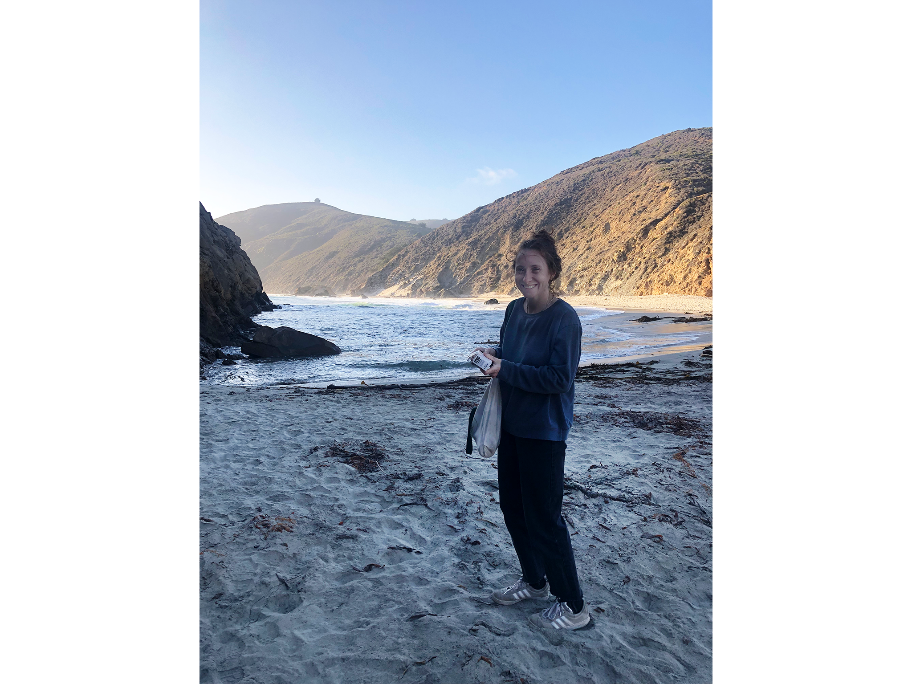

Sarah Brauner

About me: I am a PhD candidate in Mathematics at the University of Minnesota. My advisor is Vic Reiner. I will be on the job market in Fall 2022.
I am currently supported by the NSF Graduate Research Fellowship Program. Before that, I was supported by a three-year UMN College of Science and Engineering Graduate Fellowship .
Research: I study algebraic combinatorics. Specifically, I am interested in reflection groups and their connections to combinatorics, representation theory and algebraic topology. See my research page for more details.
News: My extended abstract Eulerian representations for real reflection groups was recently awarded the FPSAC Best Graduate Student Paper of 2021! (Thanks to Tom Roby for capturing the moment.) The slides for this talk can be found here and a recording of the talk is available here.
{kind=link}
Contact: Email me at braun622 "at" umn.edu.
Organizing:
- I am a co-organizer of the Mathematics Project at Minnesota, a weeklong workshop for UMN undergraduates that come from groups traditionally underrepresented in mathematics. The workshop runs annually every January. We are very grateful to be supported by the MAA Tensor Women and Mathematics Grant.
- I am a co-organizer of the Graduate Online Combinatorics Colloquium. If you are interested in speaking, please let me know.
- Last spring I co-organized the (virtual) Graduate Student Combinatorics Conference on April 23-25, 2021 at UMN. All talk recordings can be found here.
Summer and Fall 2022 Activities:
- June 13-August 6, 2022: Mentoring a problem for the University of Minnesota REU in Combinatorics and Algebra.
- June 26-30, 2022: Attending WARTHOG at University of Orgeon in Eugene, OR.
- July 18, 2022: Speaking at FSPAC at the Indian Institute of Science in Bangalore, India.
- September 17-18, 2022: Speaking at the AMS Central Fall Sectional Meeting Special Session: Algebraic, Geometric, and Topological Combinatoricsi at University of Texas at El Paso in El Paso, TX .
- October 1-2, 2022: Speaking at the AMS Northeast Fall Sectional Meeting Special Session: Geometric aspects of algebraic combinatoricsi at University of Massachusetts, Amherst in Amherst, MA.